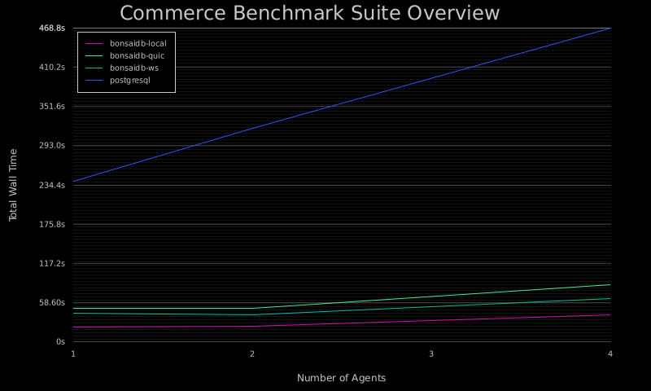

BonsaiDb Commerce Benchmark
This benchmark suite is designed to simulate the types of loads that an ecommerce application might see under different levels of concurrency and traffic patterns. As with all benchmark suites, the results should not be taken as proof that any datbase may or may not perform for any particular application. Each application's needs differ greatly, and this benchmark is designed at helping BonsaiDb's developers notice areas for improvement.
| Dataset Size | Traffic Pattern | Concurrency | bonsaidb-local | bonsaidb-quic | bonsaidb-ws | postgresql | Report |
|---|---|---|---|---|---|---|---|
| small | balanced | 1 | 789.6ms | 2.697s | 2.321s | 4.650s | Full Report |
| small | balanced | 2 | 902.0ms | 2.823s | 2.062s | 6.312s | Full Report |
| small | balanced | 4 | 1.468s | 4.849s | 3.484s | 10.91s | Full Report |
| small | readheavy | 1 | 485.0ms | 2.045s | 1.706s | 3.113s | Full Report |
| small | readheavy | 2 | 539.3ms | 2.092s | 1.445s | 4.266s | Full Report |
| small | readheavy | 4 | 1.094s | 3.716s | 2.551s | 6.855s | Full Report |
| small | writeheavy | 1 | 3.609s | 8.167s | 7.195s | 19.59s | Full Report |
| small | writeheavy | 2 | 4.747s | 8.927s | 7.401s | 29.15s | Full Report |
| small | writeheavy | 4 | 7.915s | 14.94s | 11.69s | 56.57s | Full Report |
| medium | balanced | 1 | 885.3ms | 2.821s | 2.519s | 8.733s | Full Report |
| medium | balanced | 2 | 1.065s | 3.045s | 2.211s | 10.65s | Full Report |
| medium | balanced | 4 | 1.679s | 5.197s | 4.063s | 15.73s | Full Report |
| medium | readheavy | 1 | 610.6ms | 2.146s | 1.818s | 7.352s | Full Report |
| medium | readheavy | 2 | 642.2ms | 2.217s | 1.561s | 8.468s | Full Report |
| medium | readheavy | 4 | 1.082s | 3.873s | 2.838s | 11.67s | Full Report |
| medium | writeheavy | 1 | 3.751s | 8.166s | 7.131s | 28.27s | Full Report |
| medium | writeheavy | 2 | 5.125s | 8.909s | 7.503s | 41.48s | Full Report |
| medium | writeheavy | 4 | 7.723s | 14.97s | 11.41s | 76.24s | Full Report |
| large | balanced | 1 | 1.242s | 3.154s | 2.761s | 30.84s | Full Report |
| large | balanced | 2 | 1.362s | 3.303s | 2.514s | 33.26s | Full Report |
| large | balanced | 4 | 2.208s | 5.721s | 4.112s | 38.06s | Full Report |
| large | readheavy | 1 | 854.8ms | 2.414s | 2.084s | 29.24s | Full Report |
| large | readheavy | 2 | 966.3ms | 2.576s | 1.949s | 31.11s | Full Report |
| large | readheavy | 4 | 1.372s | 4.257s | 3.304s | 35.02s | Full Report |
| large | writeheavy | 1 | 4.335s | 8.786s | 7.601s | 56.07s | Full Report |
| large | writeheavy | 2 | 5.230s | 9.564s | 7.692s | 73.60s | Full Report |
| large | writeheavy | 4 | 8.821s | 15.67s | 12.06s | 116.5s | Full Report |
Dataset Sizes
The three dataset sizes are named "small", "medium", and "large". All databases being benchmarked can handle much larger dataset sizes than "large", but it is impractical at this time to run larger benchmarks on a regular basis. Each run's individual page will show the initial data set breakdown by type.
Traffic Patterns
This suite uses a probability-based system to generate plans for agents to process concurrently. These plans operate in a "funnel" pattern of searching, adding to cart, checking out, and reviewing the purchased items. Each stage in this funnel is assigned a probabilty, and these probabilities are tweaked to simulate read-heavy traffic patterns that perform more searches than purchasing, write-heavy traffic patterns where most plans result in purchasing and reviewing the products, and a balanced traffic pattern that is meant to simulate moderate amount of write traffic.
Concurrency
The suite is configured to run the plans up to three times, depending on the number of CPU cores present: 1 agent, 1 agent per core, and 2 agents per core.